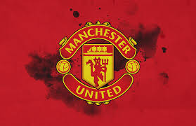

Home
News
Contact
About
Gallery
GALLERY
Croatian football team from the 2018 World Cup in Russia
Futbol Club Barcelona, Founded in 1899 by a group of Swiss, Spanish, English, and Catalan footballers led by Joan Gamper
Amsterdam Football Club Ajax, founded on March 18, 1900
Juventus Football Club, Founded in 1897 by a group of Torinese students
Club Atlético de Madrid, Founded on April 26, 1903
Chelsea F.C, Founded in 1905,
Arsenal Football Club, Founded in north-east London in 1886
Associazione Calcio Milan, Milan was founded in 1899 by tailor Herbet Kilpin and businessman Alfred Edwards
AS Roma, Founded in June 1927 as a result of the association of four football clubs from Rome (Roman, Alba-Audace, Fortitudo and Pro Roma)

Manchester United, Founded 1878 as Newton Health L&YR F.C.